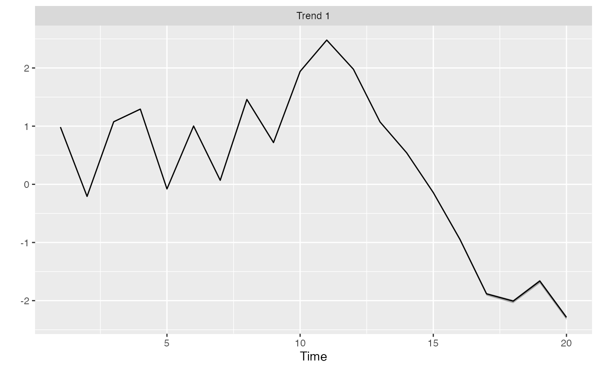

Rotate the trends from a DFA
rotate_trends(fitted_model, conf_level = 0.95, invert = FALSE)
| fitted_model | Output from |
|---|---|
| conf_level | Probability level for CI. |
| invert | Whether to invert the trends and loadings for plotting purposes |
set.seed(42) s <- sim_dfa(num_trends = 1, num_years = 20, num_ts = 3) # only 1 chain and 800 iterations used so example runs quickly: m <- fit_dfa(y = s$y_sim, iter = 50, chains = 1)#> #> SAMPLING FOR MODEL 'dfa' NOW (CHAIN 1). #> Chain 1: #> Chain 1: Gradient evaluation took 7.3e-05 seconds #> Chain 1: 1000 transitions using 10 leapfrog steps per transition would take 0.73 seconds. #> Chain 1: Adjust your expectations accordingly! #> Chain 1: #> Chain 1: #> Chain 1: WARNING: There aren't enough warmup iterations to fit the #> Chain 1: three stages of adaptation as currently configured. #> Chain 1: Reducing each adaptation stage to 15%/75%/10% of #> Chain 1: the given number of warmup iterations: #> Chain 1: init_buffer = 3 #> Chain 1: adapt_window = 20 #> Chain 1: term_buffer = 2 #> Chain 1: #> Chain 1: Iteration: 1 / 50 [ 2%] (Warmup) #> Chain 1: Iteration: 5 / 50 [ 10%] (Warmup) #> Chain 1: Iteration: 10 / 50 [ 20%] (Warmup) #> Chain 1: Iteration: 15 / 50 [ 30%] (Warmup) #> Chain 1: Iteration: 20 / 50 [ 40%] (Warmup) #> Chain 1: Iteration: 25 / 50 [ 50%] (Warmup) #> Chain 1: Iteration: 26 / 50 [ 52%] (Sampling) #> Chain 1: Iteration: 30 / 50 [ 60%] (Sampling) #> Chain 1: Iteration: 35 / 50 [ 70%] (Sampling) #> Chain 1: Iteration: 40 / 50 [ 80%] (Sampling) #> Chain 1: Iteration: 45 / 50 [ 90%] (Sampling) #> Chain 1: Iteration: 50 / 50 [100%] (Sampling) #> Chain 1: #> Chain 1: Elapsed Time: 0.007283 seconds (Warm-up) #> Chain 1: 0.120781 seconds (Sampling) #> Chain 1: 0.128064 seconds (Total) #> Chain 1:#> Warning: There were 16 divergent transitions after warmup. See #> http://mc-stan.org/misc/warnings.html#divergent-transitions-after-warmup #> to find out why this is a problem and how to eliminate them.#> Warning: There were 1 chains where the estimated Bayesian Fraction of Missing Information was low. See #> http://mc-stan.org/misc/warnings.html#bfmi-low#> Warning: Examine the pairs() plot to diagnose sampling problems#> Warning: The largest R-hat is 2.11, indicating chains have not mixed. #> Running the chains for more iterations may help. See #> http://mc-stan.org/misc/warnings.html#r-hat#> Warning: Bulk Effective Samples Size (ESS) is too low, indicating posterior means and medians may be unreliable. #> Running the chains for more iterations may help. See #> http://mc-stan.org/misc/warnings.html#bulk-ess#> Warning: Tail Effective Samples Size (ESS) is too low, indicating posterior variances and tail quantiles may be unreliable. #> Running the chains for more iterations may help. See #> http://mc-stan.org/misc/warnings.html#tail-ess#> Inference for the input samples (1 chains: each with iter = 25; warmup = 12): #> #> Q5 Q50 Q95 Mean SD Rhat Bulk_ESS Tail_ESS #> x[1,1] 0.3 0.3 0.7 0.4 0.2 2.19 13 13 #> x[1,2] -0.2 0.0 0.0 0.0 0.1 1.72 4 13 #> x[1,3] 0.2 0.2 0.9 0.5 0.3 2.19 4 13 #> x[1,4] 0.5 0.6 1.0 0.7 0.2 2.19 6 13 #> x[1,5] -0.2 0.5 1.0 0.4 0.4 2.19 13 13 #> x[1,6] 0.4 1.3 1.4 1.1 0.4 2.19 8 13 #> x[1,7] 0.3 1.0 1.0 0.8 0.3 2.10 6 13 #> x[1,8] 0.5 0.7 1.1 0.7 0.3 2.19 13 13 #> x[1,9] 0.4 0.5 1.4 0.7 0.6 1.62 12 13 #> x[1,10] 1.5 1.6 2.5 1.8 0.5 2.19 12 13 #> x[1,11] 2.0 2.7 2.9 2.6 0.4 2.08 6 13 #> x[1,12] 0.8 2.2 2.3 1.8 0.6 2.10 4 13 #> x[1,13] 0.0 1.2 1.3 0.8 0.6 2.10 7 13 #> x[1,14] -0.9 -0.2 0.1 -0.3 0.4 2.08 6 13 #> x[1,15] -1.0 -1.0 -0.3 -0.7 0.3 2.08 4 13 #> x[1,16] -2.2 -2.0 -1.3 -1.8 0.4 2.10 4 13 #> x[1,17] -2.6 -2.4 -2.0 -2.3 0.2 2.08 9 13 #> x[1,18] -2.4 -2.0 -1.3 -1.9 0.5 1.18 8 13 #> x[1,19] -1.9 -1.7 -0.7 -1.4 0.5 2.08 7 13 #> x[1,20] -1.4 -1.2 0.0 -0.8 0.5 2.10 8 13 #> Z[1,1] -0.9 -0.7 -0.6 -0.7 0.1 1.20 13 13 #> Z[2,1] -0.7 -0.4 -0.2 -0.4 0.2 1.46 13 13 #> Z[3,1] -0.8 -0.5 -0.4 -0.6 0.1 1.72 4 13 #> log_lik[1] -0.7 -0.4 -0.4 -0.5 0.1 2.19 13 13 #> log_lik[2] -2.4 -2.1 -1.8 -2.1 0.2 1.95 13 13 #> log_lik[3] -1.0 -0.6 -0.6 -0.7 0.2 1.18 8 13 #> log_lik[4] -0.8 -0.5 -0.4 -0.5 0.1 2.08 12 13 #> log_lik[5] -0.8 -0.5 -0.5 -0.6 0.1 2.08 13 13 #> log_lik[6] -0.7 -0.5 -0.4 -0.5 0.1 2.08 12 13 #> log_lik[7] -0.7 -0.6 -0.4 -0.6 0.1 2.19 13 13 #> log_lik[8] -2.2 -1.3 -1.2 -1.5 0.4 1.95 6 13 #> log_lik[9] -2.4 -1.1 -1.0 -1.4 0.5 2.10 4 13 #> log_lik[10] -0.7 -0.4 -0.4 -0.5 0.1 2.19 4 13 #> log_lik[11] -0.7 -0.4 -0.4 -0.5 0.1 2.10 9 13 #> log_lik[12] -0.8 -0.7 -0.3 -0.6 0.2 1.62 13 13 #> log_lik[13] -1.3 -0.7 -0.7 -0.8 0.3 1.33 5 13 #> log_lik[14] -0.9 -0.6 -0.4 -0.6 0.2 2.08 12 13 #> log_lik[15] -2.5 -1.1 -0.8 -1.3 0.6 2.19 13 13 #> log_lik[16] -0.9 -0.5 -0.4 -0.5 0.2 1.18 9 13 #> log_lik[17] -0.7 -0.5 -0.4 -0.5 0.1 1.77 8 13 #> log_lik[18] -0.8 -0.6 -0.4 -0.6 0.1 1.88 4 13 #> log_lik[19] -0.9 -0.8 -0.4 -0.7 0.2 1.63 7 13 #> log_lik[20] -0.7 -0.6 -0.5 -0.6 0.1 2.08 13 13 #> log_lik[21] -0.8 -0.5 -0.4 -0.6 0.1 1.88 11 13 #> log_lik[22] -2.5 -2.0 -1.6 -2.0 0.3 1.51 8 13 #> log_lik[23] -0.8 -0.6 -0.5 -0.6 0.1 2.08 13 13 #> log_lik[24] -0.8 -0.5 -0.4 -0.5 0.2 1.77 10 13 #> log_lik[25] -1.6 -0.6 -0.6 -0.8 0.6 1.33 5 13 #> log_lik[26] -0.8 -0.5 -0.5 -0.6 0.1 1.95 13 13 #> log_lik[27] -1.1 -1.0 -0.7 -1.0 0.1 1.30 5 13 #> log_lik[28] -1.0 -0.5 -0.4 -0.6 0.3 2.19 7 13 #> log_lik[29] -0.9 -0.7 -0.4 -0.7 0.2 1.03 13 13 #> log_lik[30] -1.4 -1.0 -0.4 -0.9 0.4 1.72 4 13 #> log_lik[31] -0.8 -0.5 -0.4 -0.6 0.2 1.00 9 13 #> log_lik[32] -3.7 -2.3 -1.1 -2.3 0.9 1.03 13 13 #> log_lik[33] -1.2 -0.7 -0.4 -0.8 0.3 1.05 8 13 #> log_lik[34] -2.0 -0.9 -0.5 -1.0 0.6 2.08 4 13 #> log_lik[35] -3.9 -2.2 -1.8 -2.4 0.7 1.50 5 13 #> log_lik[36] -1.1 -0.5 -0.4 -0.6 0.3 1.18 7 13 #> log_lik[37] -1.0 -0.6 -0.5 -0.7 0.2 1.51 5 13 #> log_lik[38] -2.1 -1.1 -1.0 -1.3 0.4 2.19 4 13 #> log_lik[39] -1.0 -0.5 -0.4 -0.6 0.2 2.19 4 13 #> log_lik[40] -1.7 -0.6 -0.6 -0.9 0.4 2.19 4 13 #> log_lik[41] -0.8 -0.5 -0.3 -0.5 0.1 1.46 13 13 #> log_lik[42] -0.9 -0.5 -0.3 -0.6 0.2 2.08 13 13 #> log_lik[43] -2.5 -1.2 -1.0 -1.5 0.6 1.77 13 13 #> log_lik[44] -0.7 -0.5 -0.3 -0.5 0.1 1.18 12 13 #> log_lik[45] -1.1 -0.8 -0.5 -0.8 0.2 1.58 7 13 #> log_lik[46] -1.3 -0.5 -0.4 -0.8 0.3 2.08 4 13 #> log_lik[47] -1.5 -1.2 -0.7 -1.1 0.3 1.46 10 13 #> log_lik[48] -1.0 -0.7 -0.5 -0.8 0.2 1.12 8 13 #> log_lik[49] -1.1 -0.5 -0.4 -0.6 0.3 1.77 7 13 #> log_lik[50] -5.1 -4.3 -1.7 -4.0 1.2 1.19 13 13 #> log_lik[51] -1.3 -0.9 -0.4 -0.9 0.3 1.09 8 13 #> log_lik[52] -1.5 -0.7 -0.4 -0.8 0.4 1.41 13 13 #> log_lik[53] -2.4 -1.7 -1.3 -1.8 0.4 1.18 11 13 #> log_lik[54] -1.1 -0.8 -0.5 -0.8 0.2 0.99 13 13 #> log_lik[55] -0.9 -0.6 -0.5 -0.6 0.1 1.33 13 13 #> log_lik[56] -4.2 -3.4 -2.3 -3.3 0.7 2.19 4 5 #> log_lik[57] -0.8 -0.5 -0.4 -0.5 0.1 1.62 13 13 #> log_lik[58] -0.8 -0.7 -0.5 -0.7 0.1 0.97 13 13 #> log_lik[59] -0.7 -0.6 -0.4 -0.6 0.1 2.08 13 13 #> log_lik[60] -0.8 -0.5 -0.5 -0.6 0.1 1.30 6 13 #> xstar[1,1] -2.7 -0.7 1.1 -0.7 1.2 1.09 13 13 #> sigma[1] 0.6 0.6 0.8 0.7 0.1 2.08 13 13 #> lp__ -59.5 -49.2 -46.5 -51.7 5.4 2.10 4 13 #> #> For each parameter, Bulk_ESS and Tail_ESS are crude measures of #> effective sample size for bulk and tail quantities respectively (an ESS > 100 #> per chain is considered good), and Rhat is the potential scale reduction #> factor on rank normalized split chains (at convergence, Rhat <= 1.05).